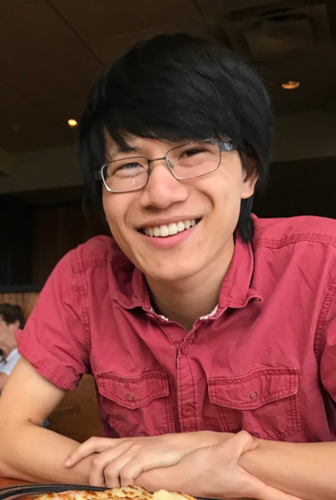

I am a fourth year PhD student studying Statistics at the University of Madison, Wisconsin. I currently serving as a statistical consultant to the College of Agriculture and Life Sciences, I am interested in studying statistics and dynamics on networks, and causal inference. I also promote transparency, understandability, and healthy communities in statistics.
I am immensely privileged to be mentored by Professor Po-Ling Loh. I am currently supported by a pre-doctoral Bio-Data Science Training Grant from the National Library of Medicine.
Welcome to my personal corner of the web!
